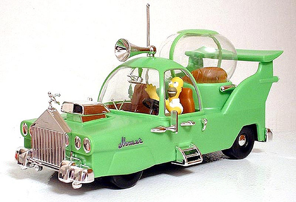

Docker and Puppet
Containerization is the new virtualization
James Turnbull
@kartar
who

- engineer and operations chap
- open source chap
- funny accent
(photo by Jennie Rainsford)
The Docker Book

www.dockerbook.com
25% off with code
PUPPETCONFLOVESDOCKER
Who are you folks?
What's this all about?
What is Docker?
Container virtualization
Build, ship, run

Build once.
Run in many places.
Isolated, layered, standard and content agnostic
But this isn't new?!!?

So why should I care?
-
Software delivery mechanism - a bit like a package!
-
Put your application in a container, run it anywhere
-
A bit like a VM but ...
Caring

Containers boot faster
Containers have less overhead
Containers bring native performance
Containers are Cloud & VM-compatible
Docker Basics
-
Image & Dockerfile
-
The Docker Hub
-
Container
Building Docker images
FROM ubuntu
MAINTAINER James Turnbull "james@example.com"
RUN apt-get -qqy update
RUN apt-get install -qqy apache2
ADD index.html /var/www/
ENV APACHE_RUN_USER www-data
ENV APACHE_RUN_GROUP www-data
ENV APACHE_LOG_DIR /var/log/apache2
EXPOSE 80
ENTRYPOINT ["/usr/sbin/apache2"]
CMD ["-D", "FOREGROUND"]
Building the image
$ sudo docker build -t="jamtur01/apache2" .Sharing the image
$ sudo docker push jamtur01/apache2Running the container
$ sudo docker run -ti -p 80:80 jamtur01/apache2Docker and Puppet
So does the Dockerfile solve all?
Well sorta...
It depends.
-
Doesn't have to deal with low-level stuff
-
Doesn't have to converge
-
Rebuilds are fast and cached
-
Allows inheritance and composition
-
Easy learning curve
But...
-
Doesn't deal with low-level stuff
-
Doesn't define resource dependencies
-
Doesn't define what runs when
Dockerfile
versus
Shell script
Shell scripts
-
Okay for simple stacks
-
Imperative
-
Rarely idempotent
Dockerfile
versus
Configuration Management
The Good
-
Handles low-level stuff
-
Abstracts details
-
Ensures convergence to a known state
-
Library of reusable, composable templates
The Bad
-
Steep learning curve
-
Generally requires a trigger
-
Resource-intensive
Digging and fixing,
Having so much fun

Working together,
They get the job done
Before Use Puppet to setup hardware, install packages, deploy code, run services.
After
Use Puppet to setup hardware, install Docker, run containers.Use Dockerfiles to install packages, deploy code, run services.
Install Docker with Puppet
Should I run Puppet in my containers?
Nope!

Should I use Puppet to build my images?
Yep!
Deploying a Puppet-powered container
Puppet Apply
FROM ubuntu:14.04
MAINTAINER James Turnbull "james@example.com"
RUN apt-get -qqy update
RUN apt-get -qqy install rubygems
RUN gem install --no-ri --no-rdoc puppet
RUN mkdir /puppet
WORKDIR /puppet
ADD site.pp /puppet/site.pp
RUN puppet apply site.pp
Librarian Puppet
FROM ubuntu:14.04
MAINTAINER James Turnbull "james@example.com"
RUN apt-get -y -q install wget git-core rubygems
RUN gem install --no-ri --no-rdoc puppet librarian-puppet
ADD Puppetfile /
RUN librarian-puppet install
RUN puppet apply --modulepath=/modules -e "class { 'nginx': }"
RUN echo "daemon off;" >> /etc/nginx/nginx.conf
EXPOSE 80
CMD ["nginx"]
But there's more!

What if we could get rid of...
-
SSHd - Access via nsenter or docker exec
-
Crond in a container
-
Logging in a container
Creates a new architecture
-
Separates orthogonal concerns
-
Don't rebuild your app to change services
-
Have different policies in domains
-
Ship lighter apps
The Future

What if we could...
-
Run the Puppet agent outside of the container
-
Run a single agent for many containers
-
Share the cost of the agent